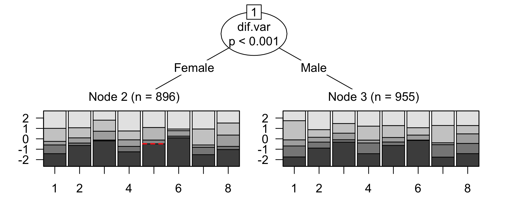

This is a work-in-progress to create a proper vignette to introduce how to make use of the RISEkbmRasch R package.
Details on installation is at the package link above. This vignette will walk through a sample analysis using an open dataset with questionnaire data. This will include some data wrangling to structure the item data and itemlabels, then provide examples of the different functions. The full source code of this document can be found either in this repository or by clicking on </> CODE at the top beside the table of contents.
One of the aims with this package is to simplify psychometric analysis to shed light on the measurement properties of a scale. In a forthcoming paper (preprint should be out in January 2023 and the link will be added here), our research group propose that the basic aspects of a psychometric analysis should include information about:
Unidimensionality
Response categories
Invariance
Targeting
Measurement uncertainties (reliability)
We’ll include several ways to investigate these measurement properties, using Rasch Measurement Theory.
1 Getting started
Since the package is intended for use with Quarto, this vignette has also been created with Quarto. A “template” .qmd file is available (insert link later) that is suggested to have at hand for copy&paste when running a new analysis.
Loading the package should also get all the dependencies loaded. You may need to make sure that ggplot2 is updated to version 3.4.0 or later.
Code
library(RISEkbmRasch) # devtools::install_github("pgmj/RISEkbmRasch")### some commands exist in multiple packages, here we define preferred ones that are frequently usedselect <- dplyr::selectcount <- dplyr::countrecode <- car::recoderename <- dplyr::rename### set up color palette based on RISE guidelinesRISEprimGreen <-"#009ca6"RISEprimRed <-"#e83c63"RISEprimYellow <-"#ffe500"RISEprimGreenMid <-"#8dc8c7"RISEprimRedMid <-"#f5a9ab"RISEprimYellowMid <-"#ffee8d"RISEprimGreenLight <-"#ebf5f0"RISEprimRedLight <-"#fde8df"RISEprimYellowLight <-"#fff7dd"RISEcompPurple <-"#482d55"RISEcompGreenDark <-"#0e4e65"RISEgrey1 <-"#f0f0f0"RISEgrey2 <-"#c8c8c8"RISEgrey3 <-"#828282"RISEgrey4 <-"#555555"
1.1 Loading data
We will use data from a recent paper investigating the “initial elevation effect” (Anvari et al. 2022), and focus on the 10 negative items from the PANAS. The data is available at the OSF website.
1.2 Itemlabels
Then we set up the itemlabels dataframe. This could also be done using the free LibreOffice Calc or MS Excel. Just make sure the file has the same structure, with two variables named itemnr and item that contain the item names and item description. The item names have to match the variable names in the item dataframe.
Variables for invariance tests such as Differential Item Functioning need to be separated into vectors (ideally as factors with specified labels and levels) with the same length as the number of rows in the dataset. This means that any kind of removal of respondents with missing data needs to be done before separating the DIF variables.
Let’s first see whether any data is missing.
Code
df %>%select(starts_with("PAN")) %>%t() %>%as.data.frame() %>%mutate(Missing =rowSums(is.na(.))) %>%select(Missing) %>%arrange(desc(Missing)) %>%rownames_to_column(var ="Item") %>%mutate(Percentage = Missing/nrow(df)*100) %>%mutate(Item =factor(Item, levels =rev(Item))) %>%ggplot(aes(x = Item, y = Percentage)) +geom_col() +coord_flip() +ggtitle("Missing data per item") +xlab("Items") +ylab("Percentage of responses missing")
No missing data, which makes this easier. We also need to check how the Sex variable has been coded and which responses are present in the data.
Code
df %>%distinct(Sex)
# A tibble: 5 × 1
Sex
<chr>
1 Male
2 Female
3 CONSENT REVOKED
4 Prefer not to say
5 DATA EXPIRED
We’ll recode all responses apart from Male/Female as missing (NA).
Code
df$Sex <- car::recode(df$Sex,"'CONSENT REVOKED'=NA; 'Prefer not to say'=NA; 'DATA EXPIRED'=NA")dif.sex <-factor(df$Sex)
Now we can make use of a very simple function included in this package!
Code
RIdemographics(dif.sex, "Sex")
Sex
n
Percent
Female
896
48.4
Male
955
51.6
And remove the DIF variable from the item dataset.
Code
df$Sex <-NULL
Let’s move on to the age variable.
Code
glimpse(df$age)
num [1:1856] 27 32 21 27 20 22 23 25 21 26 ...
Sometimes age is provided in categories, but here we have a numeric variable with age in years. Let’s have a quick look at the age distribution using a histogram, and calculate mean, sd and range.
Code
### simpler version of the ggplot below# hist(df$age, col = "#009ca6")# # df %>% # summarise(Mean = round(mean(age, na.rm = T),1),# StDev = round(sd(age, na.rm = T),1)# )ggplot(df) +geom_histogram(aes(x = age), fill ="#009ca6",col ="black") +geom_vline(xintercept =mean(df$age), linewidth =1.5,linetype =2,col ="#ffe500") +annotate("rect", ymin =0, ymax =Inf, xmin = (mean(df$age) -sd(df$age)), xmax = (mean(df$age) +sd(df$age)), alpha = .3) +labs(title ="",x ="Age in years",y ="Number of respondents",caption =glue("Note. Mean age is {round(mean(df$age, na.rm = T),1)} years with a standard deviation of {round(sd(df$age, na.rm = T),1)}. Age range is {min(df$age)} to {max(df$age)}.") ) +theme(plot.caption =element_text(hjust =0, face ="italic"))
Age also needs to be a separate vector, and removed from the item dataframe.
Code
dif.age <- df$agedf$age <-NULL
There is also a grouping variable which needs to be converted to a factor.
With only item data remaining in the dataframe, we can easily rename the items in the item dataframe. These names match the itemlabels variable itemnr.
Code
names(df) <- itemlabels$itemnr
Now we are all set for the psychometric analysis!
2 Descriptives
First, let’s familiarize ourselves with the data.
2.1 Overall responses
Code
RIallresp(df)
Response category
Number of responses
Percent
1
9444
50.9
2
4147
22.3
3
2689
14.5
4
1732
9.3
5
548
3.0
The Rasch model requires the lowest response category to be zero, which makes it necessary for us to recode our data from 1-5 to 0-4.
Now, we can also look at the raw distribution of sum scores. The RIrawdist() function is a bit crude, since it requires responses in all response categories to accurately calculate max and min scores.
Code
RIrawdist(df)
We can see a floor effect with 11.8% of participants responding in the lowest category for all items.
2.1.2 Guttman structure
While not really necessary, it could be interesting to see whether the response patterns follow a Guttman-like structure. Items and persons are sorted based on lower->higher responses, and we should see the color move from yellow in the lower left corner to blue in the upper right corner.
Code
RIheatmap(df)
In this data, we see the floor effect on the left, with 11.8% of respondents all yellow, and a rather weak Guttman structure. This could also be due to a low variation in item locations/difficulties.
2.2 Item level descriptives
There are many ways to look at the item level data, and we’ll get them all together in the tab-panel below. The RItileplot() is probably most informative, since it provides the number of responses in each response category for each item. It is usually recommended to have at least ~10 responses in each category for psychometric analysis, no matter which methodology is used.
Most people will be familiar with the barplot, and this is probably most intuitive to understand the response distribution within each item. However, if there are many items it will take a while to review, and does not provide the same overview as a tileplot or stacked bars.
Code
# this code chunk creates a small table in the margin beside the panel-tabset output below,# showing all items currently in the df dataframe# the chunk option "#| column: margin" is necessary for the layout to work as intendedRIlistItemsMargin(df, fontsize =13)
While response patterns are skewed for all items, there are more than 10 responses in each category for all items.
3 Rasch analysis 1
The eRm package and Conditional Maximum Likelihood (CML) estimation will be used primarily, with the Partial Credit Model.
This is also where the five basic psychometric aspects are good to recall.
Unidimensionality
Response categories
Invariance
Targeting
Measurement uncertainties (reliability)
We will look at all except invariance and reliability in parallel below. For unidimensionality, we are mostly interested in item fit and residual correlations, as well as PCA of residuals and loadings on the first residual contrast. At the same time, disordered response categories can influence item fit, and targeting can be useful if it is necessary to remove items due to residual correlations.
When unidimensionality and response categories are found to work adequately, we will move on to invariance testing. And when/if invariance looks good, we can investigate reliability/measurement uncertainties.
In the tabset-panel below, each tab will have some explanatory text.
Since we have a sample size over 500, ZSTD item fit values would be inflated if we use the whole sample. To better estimate accurate ZSTD values the RIitemfitPCM() function allows for multiple subsampling. It is recommended to use a sample size between 250 and 500 (Hagell and Westergren 2016). We will set the sample size to 300 and run 32 subsamples. For faster processing, RIitemfitPCM2() enables parallel processing with multiple CPUs/cores.
“Outfit” refers to item fit when person location is relatively far away from the item location, while “infit” provides estimates for when person and item locations are close together. MSQ should be close to 1, with lower and upper cutoffs set to 0.7 and 1.3, while ZSTD should be around 0, with cutoffs set to +/- 2.0. Infit is usually more important.
A low item fit indicates that responses are too predictable and provide little information. A high item fit can indicate several things, most often multidimensionality or, for questionnaires, a question that is difficult to interpret. This could for instance be a question that asks about two things at the same time.
Code
RIpcmPCA(df)
PCA of Rasch model residuals
Eigenvalues
1.79
1.46
1.28
1.14
1.06
The first eigenvalue should be below 2.0.
Code
RIresidcorr(df, cutoff =0.2)
PANAS_11
PANAS_12
PANAS_13
PANAS_14
PANAS_15
PANAS_16
PANAS_17
PANAS_18
PANAS_19
PANAS_20
PANAS_11
PANAS_12
-0.1
PANAS_13
-0.05
-0.01
PANAS_14
-0.11
0.09
0.07
PANAS_15
-0.14
-0.13
-0.22
-0.29
PANAS_16
-0.17
-0.1
-0.25
-0.27
0.39
PANAS_17
-0.18
-0.09
-0.09
-0.19
-0.13
-0.08
PANAS_18
-0.19
-0.15
-0.16
-0.18
-0.15
-0.13
0.32
PANAS_19
-0.12
-0.13
-0.25
-0.14
0.1
0.08
-0.21
-0.12
PANAS_20
-0.06
-0.22
-0.07
-0.05
-0.13
-0.19
-0.16
-0.15
-0.08
Note:
Relative cut-off value (highlighted in red) is 0.098, which is 0.2 above the average correlation.
The matrix above shows item-pair correlations of item residuals, with highlights in red showing correlations 0.2 or more above the average item-pair correlation (for all item-pairs) (Christensen, Makransky, and Horton 2017).
Code
RIloadLoc(df)
This figure can be helpful to identify clusters in data or multidimensionality.
Code
mirt.rasch <-mirt(df, model=1, itemtype='Rasch') # unidimensional Rasch model
Each response category for each item should have a curve that indicates it to be the most probably response at some point on the latent variable (x axis in the figure).
Code
# increase fig-height above as needed, if you have many itemsRItargeting(df)
This figure shows how well the items fit the respondents/persons. It is a sort of Wright Map that shows person and item threshold locations on the same logit scale.
The top part shows person location histogram, the middle part a histogram of item threshold locations, and the bottom part shows individual item threshold locations. The histograms also show means and standard deviations.
Code
RIitemHierarchy(df)
Item 18 has issues with the second lowest category, which needs to be merged with the lowest category.
Item 15 shows low item fit.
Two item-pairs have high residual correlations:
15 and 16 (scared and afraid)
17 and 18 (ashamed and guilty)
Since item 15 also had low fit, we will remove it. And since item 18 had problems with response categories, it will also be removed.
While no item shows problematic levels of DIF regarding item location, as shown by the table, there is an interesting pattern in the thresholds figure. The lowest threshold seems to be slightly lower for node 3 (Male) for all items.
The results do not require any action.
5.2 Age
Code
RIdifTable(df2, dif.age)
[1] "No significant DIF found."
No DIF found for age.
5.3 Group
Code
RIdifTable(df2, dif.group)
[1] "No significant DIF found."
And no DIF for group.
5.4 Sex and age
While it has not been implemented in this package, the psychotree package allows for DIF interaction analysis between multiple DIF variables. This will also serve as an example of how to look at and modify a package function, if needed. Use View(RIdifTable) to view the code in the function.
Relative cut-off value (highlighted in red) is 0.03, which is 0.2 above the average correlation.
Code
RItargeting(df2)
Code
RIitemHierarchy(df2)
There are several item thresholds that are very closely located, as shown in the item hierarchy figure. This is not ideal, since it will inflate reliability estimates.
However, we will not modify the response categories for this sample/simple analysis, we only note that this is not ideal.
8 Reliability
Code
RItif(df2)

While 11.8% of respondents had a floor effect, the figure above shows us that 41.8% are located below the point where the items produce a person separation index (reliability) of 0.7 or higher.
9 Person fit
We can also look at how the respondents fit the Rasch model with these items.
Code
RIpfit(df2)
10 Item parameters
To allow others (and oneself) to use the item parameters estimated for estimation of person locations/thetas, we should make the item parameters available. The function will also write a csv-file with the item threshold locations. Estimations of person locations/thetas can be done with the thetaEst() function from the catR package. Code for this is available upon request and will be made into a function in the RISEkbmRasch package at some point.
Code
RIitemparams(df2)
Threshold 1
Threshold 2
Threshold 3
Threshold 4
Item location
PANAS_11
-1.24
-0.34
0.07
1.47
-0.01
PANAS_13
0.06
0.14
0.83
1.78
0.7
PANAS_14
-0.99
-0.26
0.12
1.11
-0.01
PANAS_16
-0.22
-0.13
0.22
1.34
0.3
PANAS_17
0.28
0.30
0.75
1.17
0.63
PANAS_20
-0.90
-0.28
0.62
1.59
0.26
10.1 Ordinal sum score to interval score
This table shows the corresponding sum score values and logit scores, with standard errors for each logit value.
Allaire, JJ, Yihui Xie, Jonathan McPherson, Javier Luraschi, Kevin Ushey, Aron Atkins, Hadley Wickham, Joe Cheng, Winston Chang, and Richard Iannone. 2022. Rmarkdown: Dynamic Documents for r. https://github.com/rstudio/rmarkdown.
Anvari, Farid, Emir Efendić, Jerome Olsen, Ruben C. Arslan, Malte Elson, and Iris K. Schneider. 2022. “Bias in Self-Reports: An Initial Elevation Phenomenon.”Social Psychological and Personality Science, October, 19485506221129160. https://doi.org/10.1177/19485506221129160.
Christensen, Karl Bang, Guido Makransky, and Mike Horton. 2017. “Critical Values for Yen’s Q3: Identification of Local Dependence in the Rasch Model Using Residual Correlations.”Applied Psychological Measurement 41 (3): 178–94. https://doi.org/10.1177/0146621616677520.
Hagell, Peter, and Albert Westergren. 2016. “Sample Size and Statistical Conclusions from Tests of Fit to the Rasch Model According to the Rasch Unidimensional Measurement Model (RUMM) Program in Health Outcome Measurement.”Journal of Applied Measurement 17 (4): 416–31.
R Core Team. 2022. R: A Language and Environment for Statistical Computing. Vienna, Austria: R Foundation for Statistical Computing. https://www.R-project.org/.
Rodríguez-Sánchez, Francisco, Connor P. Jackson, and Shaurita D. Hutchins. 2022. Grateful: Facilitate Citation of r Packages. https://github.com/Pakillo/grateful.
Wickham, Hadley, Mara Averick, Jennifer Bryan, Winston Chang, Lucy D’Agostino McGowan, Romain François, Garrett Grolemund, et al. 2019. “Welcome to the tidyverse.”Journal of Open Source Software 4 (43): 1686. https://doi.org/10.21105/joss.01686.
Xie, Yihui, J. J. Allaire, and Garrett Grolemund. 2018. R Markdown: The Definitive Guide. Boca Raton, Florida: Chapman; Hall/CRC. https://bookdown.org/yihui/rmarkdown.
---title: "RISEkbmRasch"subtitle: "An R package vignette"author: name: Magnus Johansson affiliation: RISE Research Institutes of Sweden affiliation-url: https://www.ri.se/sv/vad-vi-gor/expertiser/kategoriskt-baserade-matningar orcid: 0000-0003-1669-592Xdate: '2022-12-19'execute: cache: true warning: false message: falsebibliography:- references.bib- grateful-refs.bib---This is a work-in-progress to create a proper vignette to introduce how to make use of the [RISEkbmRasch R package](https://github.com/pgmj/RISEkbmRasch).Details on installation is at the package link above. This vignette will walk through a sample analysis using an open dataset with questionnaire data. This will include some data wrangling to structure the item data and itemlabels, then provide examples of the different functions. The full source code of this document can be found either [in this repository](https://github.com/pgmj/pgmj.github.io/blob/main/raschrvignette/RaschRvign.qmd) or by clicking on **</> CODE** at the top beside the table of contents.One of the aims with this package is to simplify psychometric analysis to shed light on the measurement properties of a scale. In a forthcoming paper (preprint should be out in January 2023 and the link will be added here), our research group propose that the basic aspects of a psychometric analysis should include information about:- Unidimensionality- Response categories- Invariance- Targeting- Measurement uncertainties (reliability)We'll include several ways to investigate these measurement properties, using Rasch Measurement Theory.## Getting startedSince the package is intended for use with Quarto, this vignette has also been created with Quarto. A "template" .qmd file is available (insert link later) that is suggested to have at hand for copy&paste when running a new analysis.Loading the package should also get all the dependencies loaded. You may need to make sure that ggplot2 is updated to version 3.4.0 or later.```{r}library(RISEkbmRasch) # devtools::install_github("pgmj/RISEkbmRasch")### some commands exist in multiple packages, here we define preferred ones that are frequently usedselect <- dplyr::selectcount <- dplyr::countrecode <- car::recoderename <- dplyr::rename### set up color palette based on RISE guidelinesRISEprimGreen <-"#009ca6"RISEprimRed <-"#e83c63"RISEprimYellow <-"#ffe500"RISEprimGreenMid <-"#8dc8c7"RISEprimRedMid <-"#f5a9ab"RISEprimYellowMid <-"#ffee8d"RISEprimGreenLight <-"#ebf5f0"RISEprimRedLight <-"#fde8df"RISEprimYellowLight <-"#fff7dd"RISEcompPurple <-"#482d55"RISEcompGreenDark <-"#0e4e65"RISEgrey1 <-"#f0f0f0"RISEgrey2 <-"#c8c8c8"RISEgrey3 <-"#828282"RISEgrey4 <-"#555555"```### Loading dataWe will use data from a recent paper investigating the "initial elevation effect" [@anvari2022], and focus on the 10 negative items from the PANAS. The data is available at the OSF website.```{r}#| echo: falsedf.all <-read_csv("https://osf.io/download/6fbr5/?view_only=6ad4c2bb65d843bfb1470b8959913630")# subset items and demographic variablesdf <- df.all %>%select(starts_with("PANASD2_1"),starts_with("PANASD2_20"), age,Sex,Group) %>%select(!PANASD2_10_Active) %>%select(!PANASD2_1_Attentive)```### ItemlabelsThen we set up the itemlabels dataframe. This could also be done using the free LibreOffice Calc or MS Excel. Just make sure the file has the same structure, with two variables named `itemnr` and `item` that contain the item names and item description. The item names have to match the variable names in the item dataframe.```{r}itemlabels <- df %>%select(starts_with("PAN")) %>%names() %>%as_tibble() %>%separate(value, c(NA, "item"), sep ="_[0-9][0-9]_") %>%mutate(itemnr =paste0("PANAS_",c(11:20)), .before ="item")```### Demographics and invarianceVariables for invariance tests such as Differential Item Functioning need to be separated into vectors (ideally as factors with specified labels and levels) with the same length as the number of rows in the dataset. This means that any kind of removal of respondents with missing data needs to be done before separating the DIF variables.Let's first see whether any data is missing.```{r}df %>%select(starts_with("PAN")) %>%t() %>%as.data.frame() %>%mutate(Missing =rowSums(is.na(.))) %>%select(Missing) %>%arrange(desc(Missing)) %>%rownames_to_column(var ="Item") %>%mutate(Percentage = Missing/nrow(df)*100) %>%mutate(Item =factor(Item, levels =rev(Item))) %>%ggplot(aes(x = Item, y = Percentage)) +geom_col() +coord_flip() +ggtitle("Missing data per item") +xlab("Items") +ylab("Percentage of responses missing")```No missing data, which makes this easier. We also need to check how the `Sex` variable has been coded and which responses are present in the data.```{r}df %>%distinct(Sex)```We'll recode all responses apart from Male/Female as missing (NA).```{r}df$Sex <- car::recode(df$Sex,"'CONSENT REVOKED'=NA; 'Prefer not to say'=NA; 'DATA EXPIRED'=NA")dif.sex <-factor(df$Sex)```Now we can make use of a very simple function included in this package!```{r}RIdemographics(dif.sex, "Sex")```And remove the DIF variable from the item dataset.```{r}df$Sex <-NULL```Let's move on to the age variable.```{r}glimpse(df$age)```Sometimes age is provided in categories, but here we have a numeric variable with age in years. Let's have a quick look at the age distribution using a histogram, and calculate mean, sd and range.```{r}### simpler version of the ggplot below# hist(df$age, col = "#009ca6")# # df %>% # summarise(Mean = round(mean(age, na.rm = T),1),# StDev = round(sd(age, na.rm = T),1)# )ggplot(df) +geom_histogram(aes(x = age), fill ="#009ca6",col ="black") +geom_vline(xintercept =mean(df$age), linewidth =1.5,linetype =2,col ="#ffe500") +annotate("rect", ymin =0, ymax =Inf, xmin = (mean(df$age) -sd(df$age)), xmax = (mean(df$age) +sd(df$age)), alpha = .3) +labs(title ="",x ="Age in years",y ="Number of respondents",caption =glue("Note. Mean age is {round(mean(df$age, na.rm = T),1)} years with a standard deviation of {round(sd(df$age, na.rm = T),1)}. Age range is {min(df$age)} to {max(df$age)}.") ) +theme(plot.caption =element_text(hjust =0, face ="italic"))```Age also needs to be a separate vector, and removed from the item dataframe.```{r}dif.age <- df$agedf$age <-NULL```There is also a grouping variable which needs to be converted to a factor.```{r}dif.group <-factor(df$Group)df$Group <-NULLRIdemographics(dif.group, "Group")```With only item data remaining in the dataframe, we can easily rename the items in the item dataframe. These names match the `itemlabels` variable `itemnr`.```{r}names(df) <- itemlabels$itemnr```Now we are all set for the psychometric analysis!## DescriptivesFirst, let's familiarize ourselves with the data.### Overall responses```{r}RIallresp(df)```The Rasch model requires the lowest response category to be zero, which makes it necessary for us to recode our data from 1-5 to 0-4.```{r}df <- df %>%mutate(across(everything(), ~ car::recode(.x, "1=0;2=1;3=2;4=3;5=4", as.factor = F)))RIallresp(df)```#### Floor/ceiling effectsNow, we can also look at the raw distribution of sum scores. The `RIrawdist()` function is a bit crude, since it requires responses in all response categories to accurately calculate max and min scores.```{r}RIrawdist(df)```We can see a floor effect with 11.8% of participants responding in the lowest category for all items.#### Guttman structureWhile not really necessary, it could be interesting to see whether the response patterns follow a Guttman-like structure. Items and persons are sorted based on lower-\>higher responses, and we should see the color move from yellow in the lower left corner to blue in the upper right corner.```{r}RIheatmap(df)```In this data, we see the floor effect on the left, with 11.8% of respondents all yellow, and a rather weak Guttman structure. This could also be due to a low variation in item locations/difficulties.### Item level descriptivesThere are many ways to look at the item level data, and we'll get them all together in the tab-panel below. The `RItileplot()` is probably most informative, since it provides the number of responses in each response category for each item. It is usually recommended to have at least \~10 responses in each category for psychometric analysis, no matter which methodology is used.Most people will be familiar with the barplot, and this is probably most intuitive to understand the response distribution within each item. However, if there are many items it will take a while to review, and does not provide the same overview as a tileplot or stacked bars.```{r}#| column: margin# this code chunk creates a small table in the margin beside the panel-tabset output below,# showing all items currently in the df dataframe# the chunk option "#| column: margin" is necessary for the layout to work as intendedRIlistItemsMargin(df, fontsize =13)```::: column-page-left::: panel-tabset#### Tile plot```{r}RItileplot(df)```#### Stacked bars```{r}RIbarstack(df)```#### Barplots```{r}#| layout-ncol: 2RIbarplot(df)```::::::While response patterns are skewed for all items, there are more than 10 responses in each category for all items.## Rasch analysis 1The eRm package and Conditional Maximum Likelihood (CML) estimation will be used primarily, with the Partial Credit Model.This is also where the five basic psychometric aspects are good to recall.- Unidimensionality- Response categories- Invariance- Targeting- Measurement uncertainties (reliability)We will look at all except invariance and reliability in parallel below. For unidimensionality, we are mostly interested in item fit and residual correlations, as well as PCA of residuals and loadings on the first residual contrast. At the same time, disordered response categories can influence item fit, and targeting can be useful if it is necessary to remove items due to residual correlations.When unidimensionality and response categories are found to work adequately, we will move on to invariance testing. And when/if invariance looks good, we can investigate reliability/measurement uncertainties.In the tabset-panel below, each tab will have some explanatory text.```{r}#| column: margin#| echo: falseRIlistItemsMargin(df, fontsize =13)```::: column-page-left::: panel-tabset### Item fit {.smaller}```{r}RIitemfitPCM2(df, 300, 32, cpu =8)```Since we have a sample size over 500, ZSTD item fit values would be inflated if we use the whole sample. To better estimate accurate ZSTD values the `RIitemfitPCM()` function allows for multiple subsampling. It is recommended to use a sample size between 250 and 500 [@hagell2016]. We will set the sample size to 300 and run 32 subsamples. For faster processing, `RIitemfitPCM2()` enables parallel processing with multiple CPUs/cores."Outfit" refers to item fit when person location is relatively far away from the item location, while "infit" provides estimates for when person and item locations are close together. MSQ should be close to 1, with lower and upper cutoffs set to 0.7 and 1.3, while ZSTD should be around 0, with cutoffs set to +/- 2.0. Infit is usually more important.A low item fit indicates that responses are too predictable and provide little information. A high item fit can indicate several things, most often multidimensionality or, for questionnaires, a question that is difficult to interpret. This could for instance be a question that asks about two things at the same time.### PCA```{r}#| tbl-cap: "PCA of Rasch model residuals"RIpcmPCA(df)```The first eigenvalue should be below 2.0.### Residual correlations```{r}RIresidcorr(df, cutoff =0.2)```The matrix above shows item-pair correlations of item residuals, with highlights in red showing correlations 0.2 or more above the average item-pair correlation (for all item-pairs) [@christensen2017].### 1st contrast loadings```{r}RIloadLoc(df)```This figure can be helpful to identify clusters in data or multidimensionality.### Analysis of response categories```{r}mirt.rasch <-mirt(df, model=1, itemtype='Rasch') # unidimensional Rasch modelplot(mirt.rasch, type="trace")```Each response category for each item should have a curve that indicates it to be the most probably response at some point on the latent variable (x axis in the figure).### Targeting```{r}#| fig-height: 6# increase fig-height above as needed, if you have many itemsRItargeting(df)```This figure shows how well the items fit the respondents/persons. It is a sort of Wright Map that shows person and item threshold locations on the same logit scale.The top part shows person location histogram, the middle part a histogram of item threshold locations, and the bottom part shows individual item threshold locations. The histograms also show means and standard deviations.### Item hierarchy```{r}#| fig-height: 5RIitemHierarchy(df)```:::::::Item 18 has issues with the second lowest category, which needs to be merged with the lowest category.Item 15 shows low item fit.Two item-pairs have high residual correlations:- 15 and 16 (scared and afraid)- 17 and 18 (ashamed and guilty)Since item 15 also had low fit, we will remove it. And since item 18 had problems with response categories, it will also be removed.```{r}removed.items <-c("PANAS_15","PANAS_18")df2 <- df %>%select(!any_of(removed.items))```## Rasch analysis 2With items 15 and 18 removed.```{r}#| column: margin#| echo: falseRIlistItemsMargin(df2, fontsize =13)```:::: column-page-left::: panel-tabset### Item fit {.smaller}```{r}RIitemfitPCM2(df2, 300, 32, cpu =8)```### PCA```{r}#| tbl-cap: "PCA of Rasch model residuals"RIpcmPCA(df2)```### Residual correlations```{r}RIresidcorr(df2, cutoff =0.2)```### 1st contrast loadings```{r}RIloadLoc(df2)```### Targeting```{r}#| fig-height: 5# increase fig-height above as needed, if you have many itemsRItargeting(df2)```### Item hierarchy```{r}#| fig-height: 5RIitemHierarchy(df2)```:::::::Items 12 and 16 are a bit low in item fit ZSTD.Items 16 and 19 have a residual correlation at about 0.25 above the average level.Let's look at DIF before taking action upon this information.## Invariance/DIF### Sex```{r}#| column: margin#| echo: falseRIlistItemsMargin(df2, fontsize =13)```::: panel-tabset#### Table```{r}#| fig-height: 3RIdifTable(df2, dif.sex)```#### Figure items```{r}RIdifFigure(df2, dif.sex)```#### Figure thresholds```{r}RIdifFigThresh(df2, dif.sex)```:::While no item shows problematic levels of DIF regarding item location, as shown by the table, there is an interesting pattern in the thresholds figure. The lowest threshold seems to be slightly lower for node 3 (Male) for all items.The results do not require any action.### Age```{r}RIdifTable(df2, dif.age)```No DIF found for age.### Group```{r}RIdifTable(df2, dif.group)```And no DIF for group.### Sex and ageWhile it has not been implemented in this package, the `psychotree` package allows for DIF interaction analysis between multiple DIF variables. This will also serve as an example of how to look at and modify a package function, if needed. Use `View(RIdifTable)` to view the code in the function.```{r}dfin <- df2df.tree <-data.frame(matrix(ncol =0, nrow =nrow(dfin)))df.tree$difdata <-as.matrix(dfin)df.tree$dif.sex <- dif.sexdf.tree$dif.age <- dif.agepctree.out <-pctree(difdata ~ dif.sex + dif.age, data = df.tree)plot(pctree.out)```No interaction effect found for sex and age. The analysis only shows the previously identified DIF for sex.## Rasch analysis 3There were no issues with DIF for any item. We still need to address the previously identified problemsItems 12 and 16 are a bit low in item fit ZSTD.Items 16 and 19 have a residual correlation at about 0.25 above the average level.We'll remove item 19 since item 16 has better targeting.```{r}removed.items <-c(removed.items,"PANAS_19")df2 <- df2 %>%select(!any_of(removed.items))``````{r}#| column: margin#| echo: falseRIlistItemsMargin(df2, fontsize =13)```:::: column-page-left::: panel-tabset### Item fit {.smaller}```{r}RIitemfitPCM2(df2, 300, 32, 8)```### Residual correlations```{r}RIresidcorr(df2, cutoff =0.2)```### Targeting```{r}#| fig-height: 5RItargeting(df2)```### Item hierarchy```{r}#| fig-height: 5RIitemHierarchy(df2)```:::::::No problematic residual correlations, but item 12 is clearly low in item fit.## Rasch analysis 4```{r}removed.items <-c(removed.items,"PANAS_12")df2 <- df2 %>%select(!any_of(removed.items))``````{r}#| column: margin#| echo: falseRIlistItemsMargin(df2, fontsize =13)```:::: column-page-left::: panel-tabset### Item fit {.smaller}```{r}RIitemfitPCM2(df2, 300, 32, 8)```### Residual correlations```{r}RIresidcorr(df2, cutoff =0.2)```### Targeting```{r}#| fig-height: 5RItargeting(df2)```### Item hierarchy```{r}#| fig-height: 5RIitemHierarchy(df2)```:::::::There are several item thresholds that are very closely located, as shown in the item hierarchy figure. This is not ideal, since it will inflate reliability estimates.However, we will not modify the response categories for this sample/simple analysis, we only note that this is not ideal.## Reliability```{r}RItif(df2)```While 11.8% of respondents had a floor effect, the figure above shows us that 41.8% are located below the point where the items produce a person separation index (reliability) of 0.7 or higher.## Person fitWe can also look at how the respondents fit the Rasch model with these items.```{r}RIpfit(df2)```## Item parametersTo allow others (and oneself) to use the item parameters estimated for estimation of person locations/thetas, we should make the item parameters available. The function will also write a csv-file with the item threshold locations. Estimations of person locations/thetas can be done with the `thetaEst()` function from the `catR` package. Code for this is available upon request and will be made into a function in the `RISEkbmRasch` package at some point.```{r}RIitemparams(df2)```### Ordinal sum score to interval scoreThis table shows the corresponding sum score values and logit scores, with standard errors for each logit value.```{r}RIscoreSE(df2)```## Software used```{r}library(grateful) # devtools::install_github("Pakillo/grateful")pkgs <-cite_packages(cite.tidyverse =TRUE, output ="table",bib.file ="grateful-refs.bib",include.RStudio =TRUE)formattable(pkgs, table.attr ='class=\"table table-striped\" style="font-size: 13px; font-family: Lato; width: 80%"')```## References
![]()